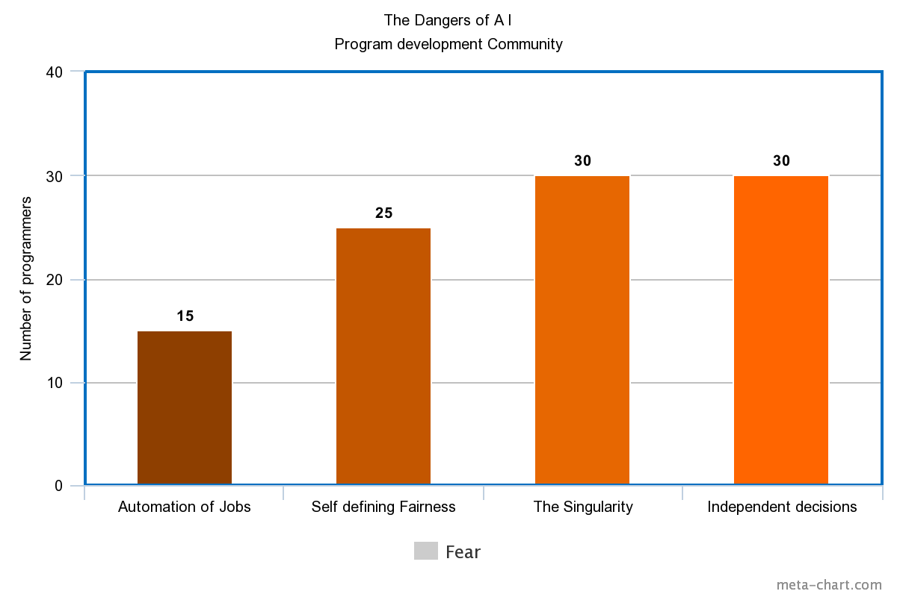

Artificial Intelligence has both benefits and Dangers associated with it, we will talk about its Dangers here
The world is split on the benefits of AI and the Dangers of AI.
but the main theory in a way that is going around the world is called the Existential Risk
Existential risk from artificial general intelligence is the hypothesis that substantial progress in artificial general intelligence (AGI) could someday result in human extinction or some other unrecoverable global catastrophe.
It is argued that the human species currently dominates other species because the human brain has some distinctive capabilities that other animals lack.
If AI surpasses humanity in general intelligence and becomes "superintelligent", then this new superintelligence could become powerful and difficult to control.
Just as the fate of the mountain gorilla depends on human goodwill, so might the fate of humanity depend on the actions of a future machine superintelligence.
The likelihood of this type of scenario is widely debated, and hinges in part on differing scenarios for future progress in computer science.
Once the exclusive domain of science fiction,
concerns about superintelligence started to become mainstream in the 2010s,
and were popularized by public figures such as Stephen Hawking, Bill Gates, and Elon Musk.
AI doesn't have to be evil to destroy humanity – if AI has a goal and humanity just happens to be in the way, it will destroy humanity as a matter of course without even thinking about it, no hard feelings. -- Elon Musk, Technology Entrepreneur, and Investor --
The above qoute explains the iminant danger to life from AI not because it Hates humans but because it has a job to do.
This will happen once we get to superintelligence level because AI cannot be taught to love. if that happens then humanity can avoid this situation but in reality it is impossible to do,
The reason for that being that humans dont know how our brain work in the first place. so it is impossible to replicate that.
This video shows the reasons that AI may be dangerous.

This chart shows the fear that developers of the algorithms have regarding AI.
where the singularity and independent decision making are the worst of there fears,
because if AI becomes a singularity in other words smarter then us then the consequences will be catastrophic.
The reason being that as long as it is less intelligent then we are we can tackle with it but if it overtakes us in intelligence then
it becomes somewhat impossible to do so as if we take the chimpanzee as an example we humans can take down the chimpanzee but the chimpanzee cannot do that as easily as we can anicipate its next move very early.
Independent decision making is second on the list as if algorithms make independent decisions it takes out the ability to control from humans,
And creates unlimited possiblities for the decision that the algorithm makes.
therefore going towards a singularity.
third is the definition of fairness in our society, Fairness is something that we humans use to define the good or the bad.
if an AI takes it upon itself to define fairness it causes problems because it can define fairness to its own benefit or rather understanding and therefore if it considers something dangerous it may mark it bad,
where that thing may be beneficial to humans.
the last thing on the list is automation of jobs, Now this is up to debate but generally it is considered that the much simple hand work like car manufacture and cloth manufacture is taken from the humans with narrow AI.
we may therefore lose all of our jobs to general intelligence.
in some cases it is tru but in others it is false.
e.g.
the welding in a car factory is done by AI but in order to keep everything move smootly technician are needed to look after the machines.